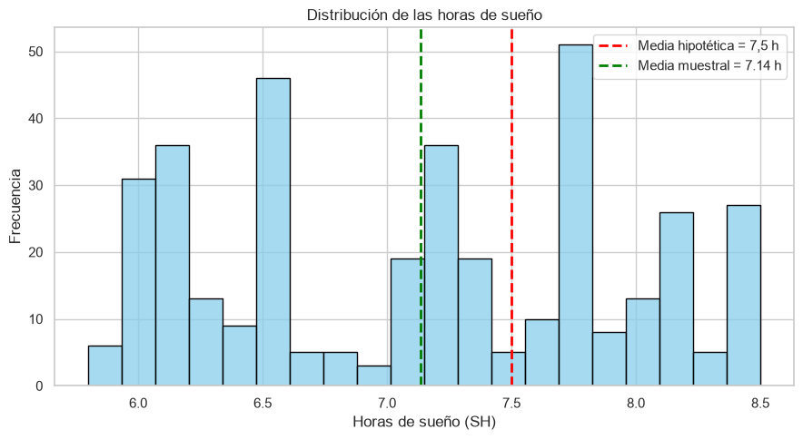
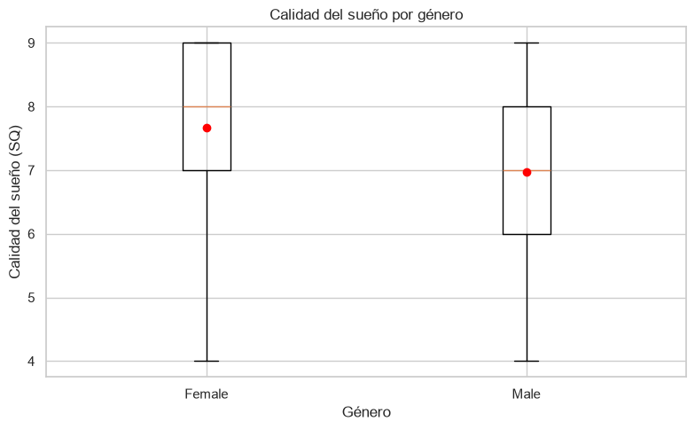
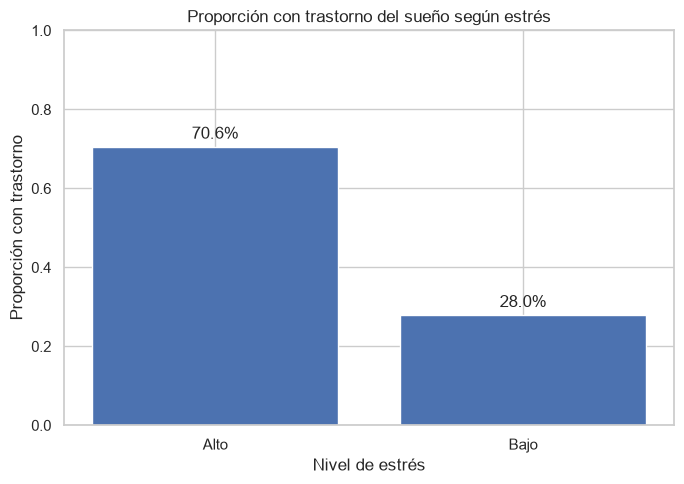
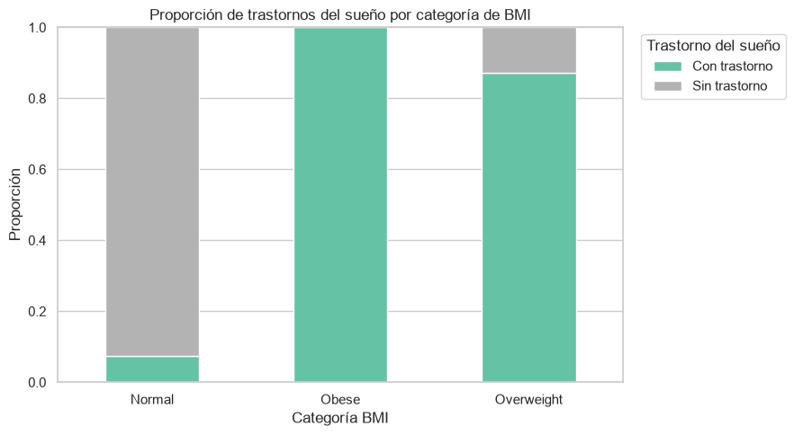

10Actividad práctica: análisis descriptivo e inferencial de la salud del sueño
Autor: Julio Úbeda Quesada Tema: contrastes de hipótesis con Python Nivel de significación de referencia:\(\alpha=0.05\)
10.1 Objetivos de aprendizaje
Describir y visualizar variables relacionadas con el sueño y el estilo de vida.
Formular hipótesis nulas y alternativas acordes con cuatro preguntas de investigación.
Aplicar pruebas paramétricas y para variables categóricas mediante scipy.stats y statsmodels.
Comparar cálculos manuales con funciones de biblioteca y explicar las diferencias metodológicas.
Interpretar los resultados sin confundir significación estadística, importancia práctica y causalidad.
Datos. Se analiza sleephealth_processed.csv, el archivo que genera la práctica de preprocesamiento del Módulo 1 (practica_preprocesamiento.ipynb) a partir de sleephealth.xlsx. Si no existe, ejecuta antes esa práctica. Son datos sintéticos, creados con fines ilustrativos: los resultados sirven para practicar los contrastes, no como conclusiones sobre la salud.
Para trabajar en tu ordenador, descarga el repositorio completo: el cuaderno necesita la librería src/stats_toolkit y los datos del curso. Las instrucciones de instalación están en el archivo README.md.
La celda siguiente solo actúa en Google Colab: descarga el repositorio del curso, instala las bibliotecas que falten y se sitúa en la carpeta de este cuaderno. Si instala o actualiza alguna, te pedirá que reinicies la sesión y vuelvas a ejecutar el cuaderno. En tu ordenador no hace nada.
Código
# Solo en Google Colab: descarga el repositorio del curso (stats_toolkit y datos),# instala las bibliotecas que falten y se sitúa en la carpeta de este cuaderno.# En otro entorno (tu ordenador, la web del curso) no hace nada.import osimport subprocessimport sysif"google.colab"in sys.modules:from importlib.metadata import PackageNotFoundError, version repo ="/content/Curso-de-Estadistica-Basica"ifnot os.path.isdir(repo): subprocess.run(["git", "clone", "--depth", "1","https://github.com/JulioUQ/Curso-de-Estadistica-Basica.git", repo], check=True)# Bibliotecas de cálculo de requirements.txt (Jupyter ya viene con Colab).withopen(f"{repo}/requirements.txt", encoding="utf-8") as f: requisitos = [linea.split("#")[0].strip() for linea in f] requisitos = [r for r in requisitos if r and r notin ("jupyter", "ipykernel", "nbclient", "nbformat")] nombres = [r.split(">=")[0] for r in requisitos]def versiones(): res = {}for n in nombres:try: res[n] = version(n)except PackageNotFoundError: res[n] =Nonereturn res antes = versiones() subprocess.run([sys.executable, "-m", "pip", "install", "-q", *requisitos], check=True) cambiadas = [n for n, v in versiones().items() if v != antes[n]]if cambiadas:print("Se han instalado o actualizado:", ", ".join(cambiadas))print("Reinicia la sesión (menú «Entorno de ejecución») y vuelve a ejecutar el cuaderno.") os.chdir(f"{repo}/notebooks/04_inferencia")
10.2 Importación de bibliotecas y carga de datos
Código
from pathlib import Pathimport numpy as npimport pandas as pdimport matplotlib.pyplot as pltimport seaborn as snsfrom scipy import statsfrom statsmodels.stats.proportion import proportions_ztestsns.set_theme(style="whitegrid", context="notebook")plt.rcParams["figure.figsize"] = (8, 4.5) # tamaño común de las figuras de una sola gráficaALPHA =0.05SEED =42# Datos generados por la práctica de preprocesamiento del Módulo 1.DATA_PATH = Path("../01_estadistica_descriptiva/data/sleephealth_processed.csv")ifnot DATA_PATH.exists():raiseFileNotFoundError(f"No se encontró {DATA_PATH}. Ejecuta antes la práctica ""'practica_preprocesamiento.ipynb' del Módulo 1, que genera este archivo." )# keep_default_na=False: en SD, "None" es una categoría (sin trastorno), no un# valor ausente; por defecto pandas la convertiría en NaN.df = pd.read_csv(DATA_PATH, keep_default_na=False, na_values=[""])print(f"Archivo: {DATA_PATH}")print(f"Dimensiones: {df.shape[0]} filas × {df.shape[1]} columnas")display(df.head())display(pd.DataFrame({"tipo": df.dtypes.astype(str), "faltantes": df.isna().sum()}))
Usamos las variables con los nombres abreviados de la práctica de preprocesamiento: SH (horas de sueño), SQ (calidad del sueño), Stress (nivel de estrés), SD (trastorno del sueño: None, Insomnia o Sleep Apnea), BMI (categoría de índice de masa corporal) y Gender. La celda siguiente comprueba que están todas y que no tienen valores ausentes.
Código
required = ["SH", "SQ", "Stress", "SD", "BMI", "Gender"]missing = [c for c in required if c notin df.columns]if missing:raiseValueError(f"Faltan columnas requeridas: {missing}. ""Comprueba que el archivo es el generado en el Módulo 1." )print("Valores ausentes en las variables del análisis:")display(df[required].isna().sum().rename("faltantes").to_frame())print("Categorías de SD:", sorted(df["SD"].unique()))
Valores ausentes en las variables del análisis:
faltantes
SH
0
SQ
0
Stress
0
SD
0
BMI
0
Gender
0
Categorías de SD: ['Insomnia', 'None', 'Sleep Apnea']
10.3 Análisis visual exploratorio
Los gráficos ayudan a describir los datos y detectar patrones, pero no sustituyen los contrastes. Los valores ausentes se excluyen de cada gráfico y análisis cuando corresponda.
10.3.1 PR1 — ¿La media de horas de sueño es inferior a 7,5 horas?
Código
sh = df["SH"].dropna()media_real = sh.mean()fig, ax = plt.subplots(figsize=(9, 5))sns.histplot(sh, bins=20, color="skyblue", edgecolor="black", ax=ax)ax.axvline(7.5, color="red", linestyle="--", linewidth=2, label="Media hipotética = 7,5 h")ax.axvline(media_real, color="green", linestyle="--", linewidth=2, label=f"Media muestral = {media_real:.2f} h")ax.set(title="Distribución de las horas de sueño", xlabel="Horas de sueño (SH)", ylabel="Frecuencia")ax.legend()plt.tight_layout()plt.show()print(f"n válido = {sh.size}; media = {sh.mean():.3f}; desviación típica = {sh.std(ddof=1):.3f}")

n válido = 373; media = 7.135; desviación típica = 0.795
10.3.2 PR2 — ¿Difiere la calidad del sueño entre géneros?
Código
gender_sq = df[["Gender", "SQ"]].dropna().copy()summary_gender = gender_sq.groupby("Gender")["SQ"].agg(n="size", media="mean", sd="std", mediana="median", q1=lambda x: x.quantile(.25), q3=lambda x: x.quantile(.75))display(summary_gender)fig, ax = plt.subplots(figsize=(8, 5))grupos =list(summary_gender.index)ax.boxplot([gender_sq.loc[gender_sq["Gender"] == g, "SQ"] for g in grupos], tick_labels=grupos, showmeans=True, meanprops={"marker": "o", "markerfacecolor": "red", "markeredgecolor": "red"})ax.set(title="Calidad del sueño por género", xlabel="Género", ylabel="Calidad del sueño (SQ)")plt.tight_layout()plt.show()
n
media
sd
mediana
q1
q3
Gender
Female
185
7.664865
1.279482
8.0
7.0
9.0
Male
188
6.973404
0.999644
7.0
6.0
8.0

10.3.3 PR3 — ¿Es mayor la proporción de trastornos del sueño con estrés alto?
Se define estrés alto como Stress > 6 y se considera trastorno del sueño cuando SD es Sleep Apnea o Insomnia.
Código
df["trastorno_sueno"] = df["SD"].isin(["Sleep Apnea", "Insomnia"])df["estres_grupo"] = np.where(df["Stress"] >6, "Alto", "Bajo")# SD vale None (sin trastorno), Insomnia o Sleep Apnea.pr3_df = df.dropna(subset=["Stress"]).copy()pr3_summary = pr3_df.groupby("estres_grupo")["trastorno_sueno"].agg(n="size", casos="sum", proporcion="mean")display(pr3_summary)fig, ax = plt.subplots(figsize=(7, 5))plot_data = pr3_summary.reset_index()ax.bar(plot_data["estres_grupo"], plot_data["proporcion"])for i, row in plot_data.reset_index(drop=True).iterrows(): ax.text(i, row["proporcion"] +0.02, f"{row['proporcion']:.1%}", ha="center")ax.set_ylim(0, 1)ax.set(title="Proporción con trastorno del sueño según estrés", xlabel="Nivel de estrés", ylabel="Proporción con trastorno")plt.tight_layout()plt.show()
n
casos
proporcion
estres_grupo
Alto
119
84
0.705882
Bajo
254
71
0.279528

10.3.4 PR4 — ¿Existe asociación entre la categoría de BMI y los trastornos del sueño?
Código
# SD = "None" indica ausencia de trastorno.pr4_df = df.dropna(subset=["BMI"]).copy()pr4_df["trastorno_etiqueta"] = np.where(pr4_df["trastorno_sueno"], "Con trastorno", "Sin trastorno")prop_bmi = pd.crosstab(pr4_df["BMI"], pr4_df["trastorno_etiqueta"], normalize="index")display(prop_bmi)ax = prop_bmi.plot(kind="bar", stacked=True, figsize=(9, 5), colormap="Set2")ax.set(title="Proporción de trastornos del sueño por categoría de BMI", xlabel="Categoría BMI", ylabel="Proporción")ax.legend(title="Trastorno del sueño", bbox_to_anchor=(1.02, 1), loc="upper left")plt.xticks(rotation=0)plt.tight_layout()plt.show()
trastorno_etiqueta
Con trastorno
Sin trastorno
BMI
Normal
0.074419
0.925581
Obese
1.000000
0.000000
Overweight
0.871622
0.128378

10.4 PR1 — Contraste de una media
Pregunta: ¿la media de horas de sueño es inferior a 7,5 horas diarias?
10.4.1 Hipótesis
\[H_0: \mu=7.5 \qquad H_1: \mu<7.5\]
Es un contraste unilateral izquierdo. Se utiliza la prueba t de una muestra porque la desviación típica poblacional no se conoce. El tamaño muestral por sí solo no garantiza todos los supuestos: revisamos independencia, valores atípicos y la forma de la distribución.
# Datos válidos y resumen descriptivo.x = df["SH"].dropna().to_numpy(dtype=float)mu0 =7.5n = x.sizemean_x = x.mean()sd_x = x.std(ddof=1)se_x = sd_x / np.sqrt(n)t_stat_manual = (mean_x - mu0) / se_xdf_manual = n -1p_manual = stats.t.cdf(t_stat_manual, df=df_manual) # cola izquierdacritical_t = stats.t.ppf(ALPHA, df=df_manual)ci_upper_one_sided = mean_x + stats.t.ppf(1- ALPHA, df=df_manual) * se_x# Comprobación con la función de SciPyt_result = stats.ttest_1samp(x, popmean=mu0, alternative="less")pr1_results = pd.DataFrame({"Método": ["Cálculo manual", "scipy.stats.ttest_1samp"],"Media muestral": [mean_x, mean_x],"t observado": [t_stat_manual, t_result.statistic],"gl": [df_manual, df_manual],"Valor p (cola izquierda)": [p_manual, t_result.pvalue],})# Redondeamos solo las columnas descriptivas: los p-valores, muy pequeños, se# mostrarían como 0.0 si se redondearan.display(pr1_results.round({"Media muestral": 6, "t observado": 6}))print(f"t crítico (α={ALPHA}, cola izquierda): {critical_t:.4f}")print(f"Límite superior del IC unilateral del 95 %: {ci_upper_one_sided:.4f} h")print(f"Decisión: {'rechazar H0'if t_result.pvalue <= ALPHA else'no rechazar H0'}")
Método
Media muestral
t observado
gl
Valor p (cola izquierda)
0
Cálculo manual
7.135147
-8.861943
372
1.648155e-17
1
scipy.stats.ttest_1samp
7.135147
-8.861943
372
1.648155e-17
t crítico (α=0.05, cola izquierda): -1.6490
Límite superior del IC unilateral del 95 %: 7.2030 h
Decisión: rechazar H0
10.4.2 Interpretación
Si el valor p es menor o igual que \(0.05\), rechazamos \(H_0\) y concluimos que los datos aportan evidencia de que la media es inferior a 7,5 horas. Si no lo es, no rechazamos \(H_0\); eso no demuestra que la media sea exactamente 7,5 horas.
10.5 PR2 — Comparación de dos medias independientes
Pregunta: ¿difiere la media de calidad del sueño entre mujeres y hombres?
\[H_0: \mu_F=\mu_M \qquad H_1: \mu_F\ne\mu_M\]
Se utiliza la prueba t de Welch, que no requiere asumir igualdad de varianzas. Para evitar confusiones, no es necesario realizar primero una prueba F de igualdad de varianzas para decidir qué prueba t aplicar.
IC 95 % para μ_F − μ_M: (0.4574, 0.9255)
Medias: mujeres=7.665; hombres=6.973
10.5.1 Interpretación
Si \(p\leq0.05\), existe evidencia estadística de una diferencia entre las medias. La dirección se interpreta con la diferencia estimada y el intervalo de confianza: si la diferencia se calculó como mujeres menos hombres, un intervalo completamente positivo indica una media mayor en el grupo de mujeres.
Una diferencia estadísticamente significativa no determina por sí sola la importancia clínica o práctica.
10.6 PR3 — Comparación unilateral de dos proporciones
Pregunta: ¿es mayor la proporción de trastornos del sueño entre las personas con estrés alto (Stress > 6) que entre las de estrés bajo (Stress ≤ 6)?
Bajo la hipótesis nula se utiliza una proporción agrupada para el estadístico Z. statsmodels.stats.proportion.proportions_ztest proporciona el contraste de dos proporciones; alternative="larger" significa que la primera proporción del vector es mayor que la segunda, por lo que el orden debe ser alto, bajo.
Para completar el contraste, es útil estimar la diferencia de proporciones y su incertidumbre. El siguiente intervalo de Wald se incluye como aproximación didáctica; con muestras pequeñas o proporciones extremas se prefieren intervalos más robustos.
Diferencia de proporciones (alto − bajo): 0.4264
IC aproximado del 95 %: (0.3276, 0.5251)
10.6.2 Interpretación
Si \(p\leq0.05\), los datos aportan evidencia de que la proporción de trastornos es mayor en el grupo de estrés alto. Al tratarse de datos observacionales, el resultado demuestra una asociación estadística, no que el estrés cause por sí solo el trastorno. La clasificación de estrés alto/bajo también depende del umbral escogido (\(>6\)).
10.7 PR4 — Asociación entre BMI y trastornos del sueño
Pregunta: ¿están asociadas la categoría de BMI y la presencia de trastornos del sueño?
\[H_0:\text{BMI y trastorno del sueño son independientes}\]\[H_1:\text{BMI y trastorno del sueño están asociados}\]
La prueba chi-cuadrado de independencia compara las frecuencias observadas con las esperadas bajo independencia:
# Hay trastorno cuando SD es Sleep Apnea o Insomnia.pr4 = df.dropna(subset=["BMI"]).copy()pr4["trastorno"] = np.where(pr4["SD"].isin(["Sleep Apnea", "Insomnia"]), "Con trastorno", "Sin trastorno")contingency = pd.crosstab(pr4["BMI"], pr4["trastorno"])print("Frecuencias observadas:")display(contingency)chi2_stat, chi2_p, chi2_df, expected = stats.chi2_contingency(contingency, correction=False)expected_df = pd.DataFrame(expected, index=contingency.index, columns=contingency.columns)print("Frecuencias esperadas bajo H0:")display(expected_df.round(3))print(f"χ²={chi2_stat:.4f}; gl={chi2_df}; p-valor={chi2_p:.6g}")print(f"¿Todas las frecuencias esperadas ≥ 5?: {bool((expected >=5).all())}")
Frecuencias observadas:
trastorno
Con trastorno
Sin trastorno
BMI
Normal
16
199
Obese
10
0
Overweight
129
19
Frecuencias esperadas bajo H0:
trastorno
Con trastorno
Sin trastorno
BMI
Normal
89.343
125.657
Obese
4.155
5.845
Overweight
61.501
86.499
χ²=243.8348; gl=2; p-valor=1.12706e-53
¿Todas las frecuencias esperadas ≥ 5?: False
10.7.1 Comprobación manual y tamaño de efecto
La siguiente celda reproduce el estadístico de Pearson con las frecuencias observadas y esperadas. Para tablas mayores que 2×2 se informa también \(V\) de Cramér como medida descriptiva de asociación.
10.7.2 Prueba de Fisher para tablas mayores que 2×2
Como alternativa a la aproximación chi-cuadrado, la prueba de Fisher compara la tabla observada con todas las tablas posibles que tienen los mismos totales de fila y de columna. En tablas 2×2, scipy.stats.fisher_exact calcula el p-valor exacto. En tablas mayores, como esta de 3×2, no lo calcula de forma exacta: lo estima por simulación Monte Carlo, generando muchas tablas aleatorias con esos totales. Por eso el resultado cambia ligeramente de una ejecución a otra, salvo que se fije la semilla, y su precisión depende del número de tablas simuladas. Lo indicamos explícitamente para no presentar como exacto un valor estimado.
Código
n_sim =100_000fisher_mc = stats.fisher_exact( contingency.to_numpy(), method=stats.MonteCarloMethod(n_resamples=n_sim, rng=np.random.default_rng(SEED)),)p_fisher = fisher_mc.pvalue# SciPy estima p = (k + 1) / (n_sim + 1), donde k es el número de tablas simuladas# al menos tan extremas como la observada.k =round(p_fisher * (n_sim +1)) -1print(f"Prueba de Fisher (tabla 3×2) con {n_sim:,} tablas simuladas por Monte Carlo:")if k ==0:print("Ninguna tabla simulada es tan extrema como la observada, así que solo podemos")print(f"afirmar que el p-valor es menor que 1/(n_sim + 1) ≈ {1/ (n_sim +1):.1g}.")else: se_fisher = np.sqrt(p_fisher * (1- p_fisher) / n_sim)print(f"p ≈ {p_fisher:.4g} (error estándar de la estimación ≈ {se_fisher:.1g})")
Prueba de Fisher (tabla 3×2) con 100,000 tablas simuladas por Monte Carlo:
Ninguna tabla simulada es tan extrema como la observada, así que solo podemos
afirmar que el p-valor es menor que 1/(n_sim + 1) ≈ 1e-05.
10.7.3 Interpretación
Si el valor p del contraste de independencia es menor o igual que \(0.05\), rechazamos la hipótesis de independencia y concluimos que existe evidencia de asociación entre la categoría de BMI y el trastorno del sueño. Esto no identifica automáticamente qué categorías difieren ni demuestra causalidad. Hay que inspeccionar las proporciones y frecuencias esperadas; si estas son escasas, el valor p asintótico de chi-cuadrado puede no ser fiable.
10.8 Tabla resumen de resultados
La tabla se construye a partir de los cálculos del notebook, no de valores escritos a mano. Las conclusiones se generan de acuerdo con el nivel de significación seleccionado.
Código
def decision(p, alpha=ALPHA):return"Rechazar H₀"if p <= alpha else"No rechazar H₀"summary_results = pd.DataFrame([ {"Pregunta": "PR1 — media de sueño < 7,5 h", "Prueba": "t de una muestra, unilateral", "Estadístico": t_result.statistic, "gl": n-1, "p-valor": t_result.pvalue, "Decisión": decision(t_result.pvalue)}, {"Pregunta": "PR2 — diferencia de calidad por género", "Prueba": "t de Welch, bilateral", "Estadístico": welch_result.statistic, "gl": df_welch, "p-valor": welch_result.pvalue, "Decisión": decision(welch_result.pvalue)}, {"Pregunta": "PR3 — proporción mayor con estrés alto", "Prueba": "Z de dos proporciones, unilateral", "Estadístico": z_sm, "gl": np.nan, "p-valor": p_sm, "Decisión": decision(p_sm)}, {"Pregunta": "PR4 — asociación BMI y trastorno", "Prueba": "Chi-cuadrado de independencia", "Estadístico": chi2_stat, "gl": chi2_df, "p-valor": chi2_p, "Decisión": decision(chi2_p)},])display(summary_results)print("Interpretación global:")for _, row in summary_results.iterrows():print(f"- {row['Pregunta']}: {row['Decisión']} (p={row['p-valor']:.4g}).")
Pregunta
Prueba
Estadístico
gl
p-valor
Decisión
0
PR1 — media de sueño < 7,5 h
t de una muestra, unilateral
-8.861943
372.000000
1.648155e-17
Rechazar H₀
1
PR2 — diferencia de calidad por género
t de Welch, bilateral
5.809893
347.918176
1.412360e-08
Rechazar H₀
2
PR3 — proporción mayor con estrés alto
Z de dos proporciones, unilateral
7.787926
NaN
3.405906e-15
Rechazar H₀
3
PR4 — asociación BMI y trastorno
Chi-cuadrado de independencia
243.834789
2.000000
1.127063e-53
Rechazar H₀
Interpretación global:
- PR1 — media de sueño < 7,5 h: Rechazar H₀ (p=1.648e-17).
- PR2 — diferencia de calidad por género: Rechazar H₀ (p=1.412e-08).
- PR3 — proporción mayor con estrés alto: Rechazar H₀ (p=3.406e-15).
- PR4 — asociación BMI y trastorno: Rechazar H₀ (p=1.127e-53).
10.9 Conclusiones y límites del análisis
Redacta las conclusiones finales con la evidencia calculada al ejecutar las celdas anteriores. Para cada pregunta, informa:
La estimación descriptiva principal (media, diferencia de medias o proporción por grupo).
El contraste aplicado, el estadístico, los grados de libertad cuando correspondan y el valor p.
La decisión respecto a \(H_0\) para \(\alpha=0.05\).
La incertidumbre y el tamaño del efecto, además de cualquier supuesto problemático.
Una interpretación contextual que no exceda lo que permite el diseño del estudio.
No concluyas que se ha demostrado la hipótesis nula cuando el valor p sea mayor que \(\alpha\); la conclusión es que no se ha encontrado evidencia suficiente para rechazarla. Tampoco interpretes asociaciones observacionales como relaciones causales.
10.10 Funciones utilizadas y precauciones
Tarea
Python
Observación metodológica
Leer los datos
pandas.read_csv()
Con keep_default_na=False, para que la categoría "None" no se lea como ausente.
Media y desviación típica
Series.mean(), Series.std() / numpy.std(ddof=1)
pandas usa por defecto la desviación típica muestral; en NumPy hay que indicar ddof=1.
t de una muestra
scipy.stats.ttest_1samp(..., alternative="less")
El argumento alternative fija el sentido del contraste.
t de Welch
scipy.stats.ttest_ind(x, y, equal_var=False)
No supone varianzas iguales.
Dos proporciones
statsmodels.stats.proportion.proportions_ztest()
Aproximación normal con proporción agrupada, sin corrección de continuidad.
En tablas 2×2, SciPy aplica por defecto la corrección de Yates; el curso usa el estadístico de Pearson sin corrección.
Fisher
scipy.stats.fisher_exact()
Exacto en tablas 2×2; en tablas mayores, p-valor estimado por Monte Carlo (fijar la semilla).
Gráficos
matplotlib / seaborn
10.10.1 Precauciones
Los valores p y los intervalos pueden variar ligeramente si se aplican correcciones de continuidad, definiciones distintas del intervalo o versiones diferentes de las bibliotecas.
Los valores ausentes se deben gestionar explícitamente para que los tamaños muestrales usados en las fórmulas manuales coincidan con los de las funciones estadísticas.
10.11 Ejercicios propuestos
Construye un intervalo bootstrap del 95 % para la mediana de las horas de sueño (SH) y otro para la media. Compara este último con el intervalo t clásico.
Toma la desviación típica observada de SH como valor de \(\sigma\). ¿Qué potencia tenía el contraste de PR1 (unilateral, \(\alpha = 0{,}05\)) para detectar una media real 0,1 horas inferior a 7,5? ¿Cuántas personas harían falta para una potencia del 90 %?
Queremos repetir el estudio para estimar la proporción de personas con trastorno del sueño con un margen de error de ±3 puntos porcentuales (confianza del 95 %). ¿Cuántas personas hay que encuestar si usamos como valor previo la proporción observada? ¿Y sin información previa (\(p = 0{,}5\))?
Código
# Escribe tu solución aquí
10.12 Soluciones
Intenta resolver los ejercicios antes de desplegar cada solución. Usan las funciones de stats_toolkit presentadas en la teoría del Módulo 4.
TipSolución del ejercicio 1
Remuestreamos las horas de sueño con inf.bootstrap_ci (método de los percentiles, semilla fija).
Código
import syssys.path.append("../../src")from stats_toolkit import inference as infsh = df["SH"].dropna().to_numpy(float)low_med, up_med = inf.bootstrap_ci(sh, np.median, n_resamples=10_000, seed=SEED)low_bm, up_bm = inf.bootstrap_ci(sh, np.mean, n_resamples=10_000, seed=SEED)low_t, up_t = inf.confidence_interval_mean_t(sh.mean(), sh.std(ddof=1), sh.size)print(f"Mediana = {np.median(sh):.2f} h; IC bootstrap 95 %: ({low_med:.2f}, {up_med:.2f})")print(f"Media = {sh.mean():.3f} h; IC bootstrap 95 %: ({low_bm:.3f}, {up_bm:.3f})")print(f" IC t 95 %: ({low_t:.3f}, {up_t:.3f})")
Mediana = 7.20 h; IC bootstrap 95 %: (7.10, 7.20)
Media = 7.135 h; IC bootstrap 95 %: (7.057, 7.216)
IC t 95 %: (7.054, 7.216)
El intervalo bootstrap de la media prácticamente coincide con el intervalo t: con 373 observaciones, el TCL justifica la t y los dos métodos dan la misma respuesta. El de la mediana, (7,10; 7,20), es estrecho y su límite superior coincide con la propia mediana: SH se registra con un decimal y muchas personas comparten los mismos valores, así que la mediana de una remuestra solo puede tomar unos pocos valores. Es un ejemplo de las limitaciones del bootstrap percentil con estadísticos de datos discretos.
TipSolución del ejercicio 2
Con \(n = 373\) la t de Student y la Normal casi coinciden, así que usamos las fórmulas del test z con \(\sigma \approx s\). La diferencia buscada es negativa (media menor que 7,5), coherente con la alternativa "less".
Código
s_sh = sh.std(ddof=1)potencia = inf.power_z_test_mean(effect=-0.1, sigma=s_sh, n=sh.size, alpha=ALPHA, alternative="less")n_90 = inf.sample_size_z_test_mean(effect=-0.1, sigma=s_sh, alpha=ALPHA, power=0.90, alternative="less")print(f"s = {s_sh:.3f} h; n = {sh.size}")print(f"Potencia para detectar 7,4 h frente a 7,5 h: {potencia:.3f}")print(f"n necesario para una potencia del 90 %: {n_90}")
s = 0.795 h; n = 373
Potencia para detectar 7,4 h frente a 7,5 h: 0.783
n necesario para una potencia del 90 %: 542
Con 373 personas, la potencia para detectar una media real de 7,4 horas es de 0,78: si la diferencia real fuera de solo 0,1 horas, un estudio como este la detectaría aproximadamente en 4 de cada 5 repeticiones. Para llegar al 90 % harían falta 542 personas. En PR1 la media observada (7,14 h) está mucho más lejos de 7,5, por eso aquel contraste fue claramente significativo.
TipSolución del ejercicio 3
Aplicamos \(n = z^2 p(1-p)/E^2\) con la proporción observada de trastornos y con el valor conservador \(p = 0{,}5\).
Código
trastorno = df["SD"].isin(["Sleep Apnea", "Insomnia"])p_obs = trastorno.mean()n_obs = inf.sample_size_proportion_ci(margin=0.03, p=p_obs)n_cons = inf.sample_size_proportion_ci(margin=0.03)low_w, up_w = inf.confidence_interval_proportion_wilson(int(trastorno.sum()), trastorno.size)print(f"Proporción observada: {p_obs:.3f} (n = {trastorno.size}); IC de Wilson 95 %: ({low_w:.3f}, {up_w:.3f})")print(f"n con p = {p_obs:.3f}: {n_obs}")print(f"n con p = 0,5: {n_cons}")
Proporción observada: 0.416 (n = 373); IC de Wilson 95 %: (0.367, 0.466)
n con p = 0.416: 1037
n con p = 0,5: 1068
Con la proporción observada (0,416) bastan 1037 personas; sin información previa, el valor conservador \(p = 0{,}5\) exige 1068. La diferencia es pequeña porque 0,416 está cerca de 0,5, donde \(p(1-p)\) es máximo. Como referencia, con las 373 personas actuales el intervalo de Wilson tiene un margen de unos ±5 puntos.